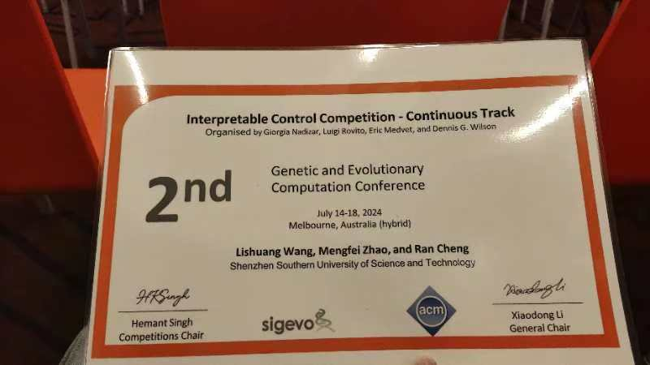
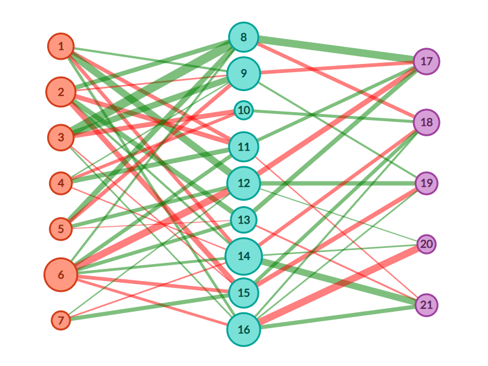

- Implemented the NEAT algorithm using the JAX framework for tensorized representation and parallel computation.
- Achieved 10-100x speedup compared to Python-NEAT.
I was responsible for simplifying the design of the NEAT algorithm, conducting comprehensive
experimental research, and testing its performance against other algorithms. I also fine-tuned
the parameters to enhance the overall efficiency of the algorithm.
- Achieved second place in the GECCO 2024 Interpretable Control Competition.
- Combined neural evolution and pruning to solve the Walker2D task with a 30-parameter neural network.
In this project, I was responsible for optimizing the algorithm design and tuning hyperparameters,
which significantly improved TensorNEAT's performance in the Walker2D task. My work contributed
to achieving second place in the competition.

INCEPT Algorithm
The INCEPT algorithm was independently designed by me with the goal of achieving high pruning
rates while maintaining model performance. The algorithm has demonstrated impressive results,
achieving up to a 97% pruning rate on the Humanoid and several MuJoCo tasks without sacrificing
the accuracy of the model. This is a significant breakthrough in the field of neural network
pruning, as it outperforms current state-of-the-art algorithms in terms of training cost, model
accuracy, and pruning rate. The INCEPT algorithm is currently being prepared for submission to
Nature Machine Intelligence, where we hope to share our findings with the broader research community.
Humanoid Pruning Visualization
Below is a visualization of a humanoid model with only 3,000 parameters. Despite the reduction
in parameters, the pruned model performs similarly to the original model, which has 100,000
parameters. This is a testament to the effectiveness of the INCEPT algorithm in reducing model
complexity while maintaining high performance.
Walker2D Network Pruning Visualization
Below is the visualization of the Walker2D model after pruning. The image clearly shows the network's
connection pattern post-pruning, where the critical connections are maintained while the non-essential
ones are removed. This pruning process not only optimizes the network but also makes it more interpretable.

PPO Real-Time Obstacle Avoidance on CARLA Platform
In this project, I implemented PPO for real-time obstacle avoidance on the CARLA simulation platform,
a popular platform for autonomous driving research. The goal was to train an agent to navigate a complex
environment while avoiding obstacles in real time. This project was part of a course project, and I was
responsible for implementing the PPO algorithm, tuning the hyperparameters, and optimizing the training process.
Below is a video showing the PPO agent navigating the CARLA platform, avoiding obstacles, and successfully
reaching its navigation point.
INCEPT on Genesis Platform
Currently, I am working on migrating the INCEPT algorithm to the Genesis platform, which will allow us
to conduct extensive experimentation and further evaluate the algorithm's performance across different
robotic tasks.
Below is a video showing the drone controlled by a tiny model with only 3500 parameters.
Below is a video showing the Go2 robot performing a backflip.